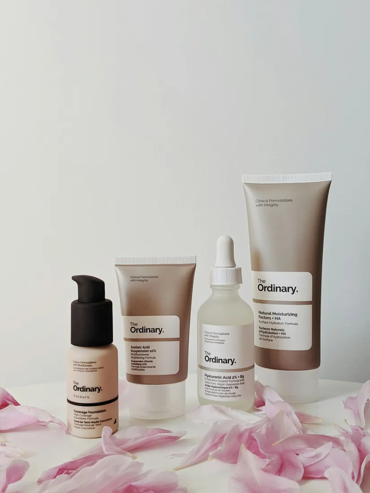

Barrier cream
2,900 ₾ · 50 ml
A rich cream with ceramides and squalane for dry and tight skin. Use morning and evening on clean skin.
Ingredients
Water, squalane, ceramides NP, glycerin, shea butter.
How to use
Warm a pea-sized amount in your palms and press into the skin.
Delivery
2-4 days, free from 5,000 ₾.
Goes well with
 Daily moisturiserLight texture, absorbs in a minute.
Daily moisturiserLight texture, absorbs in a minute.2,400 ₾
 Rose face oilNight care with rosehip.
Rose face oilNight care with rosehip.3,200 ₾